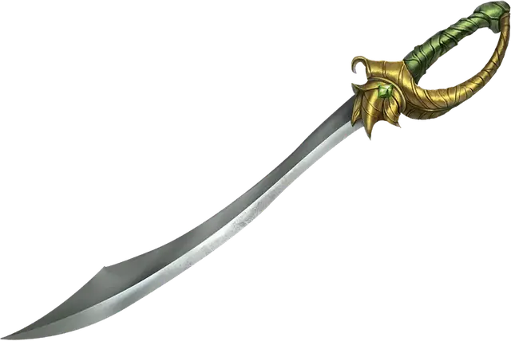

Коготь сильван
Sylvan Talon
Оружие (Кинжал, Копьё, Короткий меч, Рапира, Серп или Скимитар), обычное (требуется настройка)

Рекомендованная стоимость 100 ЗМ
Пока это оружие находится при вас, вы понимаете коммуникацию всех Фей, за исключением письменной, а они понимают вашу.
Тайное сообщение. Действием Магия вы можете использовать оружие, чтобы наложить заклинание Сообщение. Как только это свойство использовано, его нельзя использовать снова до следующего рассвета.